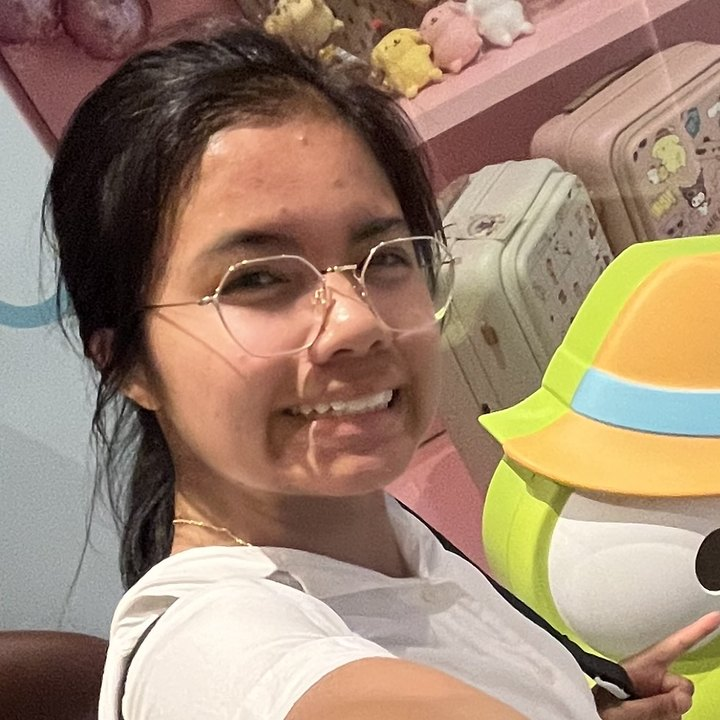

The people behind the aprons
Meet the team.
A small, flour-covered crew who pick the recipes, haul the groceries, and unlock the kitchen.

Started the club and still runs the room — sets the semester lineup, keeps the collabs coming, and makes sure everyone leaves with something they baked.
The other half of the original two. Keeps the semester on schedule and steps in wherever a workshop needs a second pair of hands.

Turns a budget into butter, flour, and sugar. Handles funding, receipts, and the grocery run before every workshop.
Documents the mess and the good part. Posts the recaps, announces the next bake, and keeps the feed looking like the club feels.
Shares the other half of the story — event graphics, collab announcements, and the photos everyone asks to be tagged in.
The first reply in the inbox. Sets up collaborations with other campus groups and gets the word out before every session.
Finds the recipe, tests it, and scales it so it works for a room full of bakers instead of one kitchen.
Runs sessions from the front of the kitchen — walks through each step, answers the questions, and keeps ten trays moving at once.
Leads bakes and troubleshoots them live — the person to flag down when the dough is too sticky or the oven runs hot.
Sets up the stations before anyone arrives and leads a table through the recipe once they do.
Want to bake with us?
No experience needed — every workshop is open to the whole campus. Say hello on the More Info page.